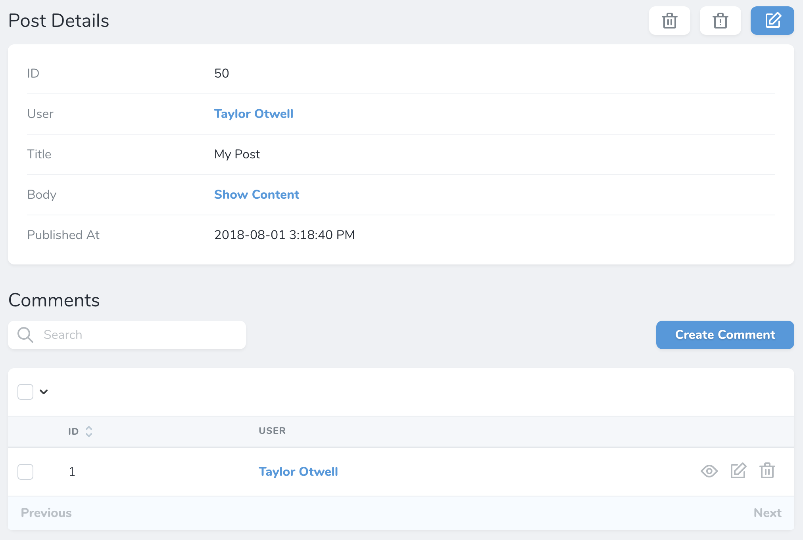
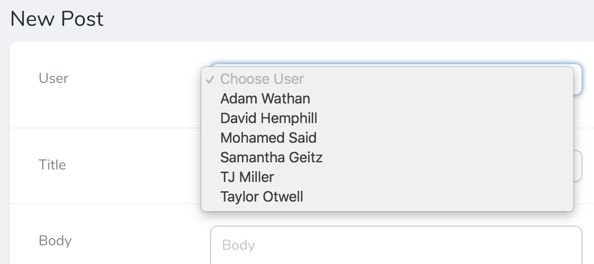
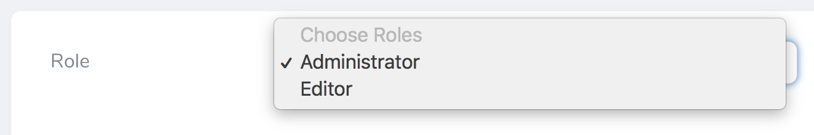
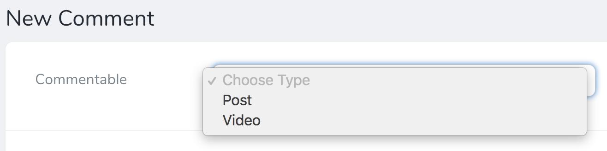
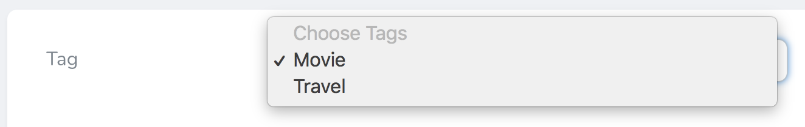
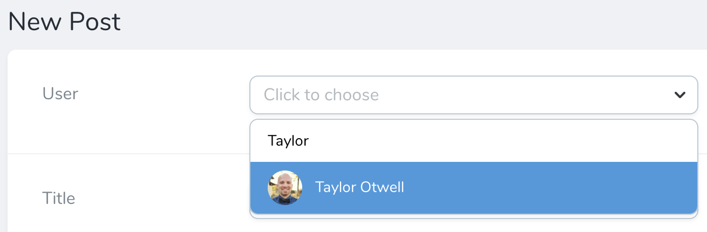
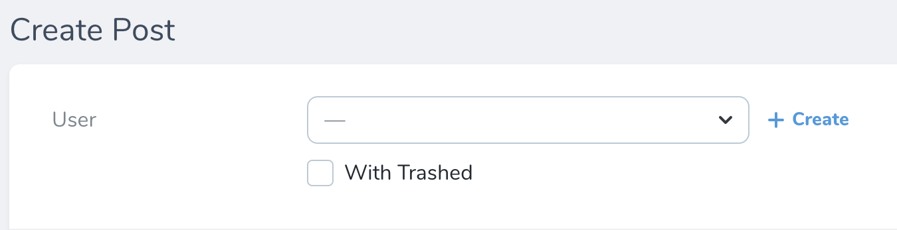

Relationships
In addition to the variety of fields we've already discussed, Nova has full support for all of Laravel's relationships. Once you add relationship fields to your Nova resources, you'll start to experience the full power of the Nova dashboard, as the resource detail page will allow you to quickly view and search a resource's related models:

HasOne
The HasOne field corresponds to a hasOne Eloquent relationship. For example, let's assume a User model hasOne Address model. We may add the relationship to our User Nova resource like so:
use Laravel\Nova\Fields\HasOne;
HasOne::make('Address'),
Like other types of fields, relationship fields will automatically "snake case" the displayable name of the field to determine the underlying relationship method / attribute. However, you may explicitly specify the name of the relationship method by passing it as the second argument to the field's make method:
HasOne::make('Dirección', 'address'),
HasMany
The HasMany field corresponds to a hasMany Eloquent relationship. For example, let's assume a User model hasMany Post models. We may add the relationship to our User Nova resource like so:
use Laravel\Nova\Fields\HasMany;
HasMany::make('Posts'),
Once the field has been added to your resource, it will be displayed on the resource's detail page.
Plural Resource Names
When defining HasMany relationships, make sure to use the plural form of the relationship so Nova can infer the correct singular resource name:
HasMany::make('Posts'),
HasOneThrough
The HasOneThrough field corresponds to a hasOneThrough Eloquent relationship. For example, let's assume a Mechanic model has one Car, and each Car may have one Owner. While the Mechanic and the Owner have no direct connection, the Mechanic can access the Owner through the Car itself. You can display this relationship by adding it to your Nova resource:
use Laravel\Nova\Fields\HasOneThrough;
HasOneThrough::make('Owner'),
HasManyThrough
The HasManyThrough field corresponds to a hasManyThrough Eloquent relationship. For example, a Country model might have many Post models through an intermediate User model. In this example, you could easily gather all blog posts for a given country. To display this relationship inside Nova, you can add it to your Nova resource:
use Laravel\Nova\Fields\HasManyThrough;
HasManyThrough::make('Posts'),
BelongsTo
The BelongsTo field corresponds to a belongsTo Eloquent relationship. For example, let's assume a Post model belongsTo a User model. We may add the relationship to our Post Nova resource like so:
use Laravel\Nova\Fields\BelongsTo;
BelongsTo::make('User'),
Customizing Resource Classes
You can customize the resource class used by the relation field by setting the second and third parameters of the make method:
BelongsTo::make('Author', 'author', 'App\Nova\User'),
Nullable Relationships
If you would like your BelongsTo relationship to be nullable, chain the nullable method onto the field's definition:
use Laravel\Nova\Fields\BelongsTo;
BelongsTo::make('User')->nullable(),
Title Attributes
When a BelongsTo field is shown on a resource creation / update page, a drop-down selection menu or search menu will display the "title" of the resource. For example, a User resource may use the name attribute as its title. Then, when the resource is shown in a BelongsTo selection menu, that attribute will be displayed:

To customize the "title" attribute of a resource, you may define a title property on the resource class:
public static $title = 'name';
Alternatively, you may override the resource's title method:
/**
* Get the value that should be displayed to represent the resource.
*
* @return string
*/
public function title()
{
return $this->name;
}
Disable Ordering By Title
By default, associatable resources will be sorted by their title when listed in a select dropdown. Using the dontReorderAssociatables method, you can disable this behavior so that the resources as sorted based on the ordering specified by the relatable query:
BelongsTo::make('User')->dontReorderAssociatables(),
Filter Trashed Items
By default, the BelongsTo field will allow users to select soft-deleted models; however, this can be disabled using the withoutTrashed method:
BelongsTo::make('User')->withoutTrashed(),
BelongsToMany
The BelongsToMany field corresponds to a belongsToMany Eloquent relationship. For example, let's assume a User model belongsToMany Role models:
public function roles()
{
return $this->belongsToMany(Role::class);
}
We may add the relationship to our User Nova resource like so:
use Laravel\Nova\Fields\BelongsToMany;
BelongsToMany::make('Roles'),
You may customize the resource class used by the relationship field by providing the second and third arguments to the make method:
BelongsToMany::make('Pseudonyms', 'pseudonyms', 'App\Nova\Author'),
Once the field has been added to your resource, it will be displayed on the resource's detail page.
Pivot Fields
If your belongsToMany relationship interacts with additional "pivot" fields that are stored on the intermediate table of the many-to-many relationship, you may also attach those to your BelongsToMany Nova relationship. Once these fields are attached to the relationship field, and the relationship has been defined on both sides, they will be displayed on the related resource index.
For example, let's assume our User model belongsToMany Role models. On our role_user intermediate table, let's imagine we have a notes field that contains some simple text notes about the relationship. We can attach this pivot field to the BelongsToMany field using the fields method:
BelongsToMany::make('Roles')
->fields(function ($request, $relatedModel) {
return [
Text::make('Notes'),
];
}),
Of course, it is likely we would also define this field on the inverse of the relationship. So, if we define the BelongsToMany field on the User resource, we would define its inverse on the Role resource:
BelongsToMany::make('Users')
->fields(function ($request, $relatedModel) {
return [
Text::make('Notes'),
];
}),
Since defining the field on both ends of the relationship can cause some code duplication, Nova allows you to pass an invokable object to the fields method:
BelongsToMany::make('Users')->fields(new RoleUserFields),
In this example, the RoleUserFields class would be a simple, invokable class that returns the array of pivot fields:
<?php
namespace App\Nova;
use Laravel\Nova\Fields\Text;
class RoleUserFields
{
/**
* Get the pivot fields for the relationship.
*
* @param \Laravel\Nova\Http\Requests\NovaRequest $request
* @param \Illuminate\Database\Eloquent\Model $relatedModel
* @return array
*/
public function __invoke($request, $relatedModel)
{
return [
Text::make('Notes'),
];
}
}
Pivot Computed Fields
Laravel Nova also allows you to define computed fields within the field list of a belongsToMany relationship field:
BelongsToMany::make('Users')
->fields(function ($request, $relatedModel) {
return [
Text::make('Notes'),
Boolean::make('Has Notes', function ($pivot) {
return ! empty($pivot->notes);
}),
];
}),
Pivot Actions
Typically, Nova actions operate on a resource. However, you may also attach actions to belongsToMany fields so that they can operate on pivot / intermediate table records. To accomplish this, you may chain the actions method onto your field's definition:
BelongsToMany::make('Roles')
->actions(function () {
return [
new Actions\MarkAsActive,
];
}),
Once the action has been attached to the field, you will be able to select the action and execute it from the relationship index on the parent's resource detail page.
Actions
To learn more about Nova actions, check out the complete action documentation.
Title Attributes
When a BelongsToMany field is shown on a resource creation / update page, a drop-down selection menu or search menu will display the "title" of the resource. For example, a Role resource may use the name attribute as its title. Then, when the resource is shown in a BelongsToMany selection menu, that attribute will be displayed:

To customize the "title" attribute of a resource, you may define a title property on the resource class:
public static $title = 'name';
Alternatively, you may override the resource's title method:
/**
* Get the value that should be displayed to represent the resource.
*
* @return string
*/
public function title()
{
return $this->name;
}
Allowing Duplicate Relations
By default, Laravel Nova ensures that "belongs to many" relationships are unique. However, you may instruct Nova to allow duplicate relationship entries.
To get started, you should ensure that your pivot record's id column is available by using withPivot() when defining the relationship on your Eloquent model. In this example, let's imagine that a User may purchase a Book one or more times:
public function books()
{
return $this->belongsToMany(Book::class)
->using(BookPurchase::class)
->withPivot('id', 'notes')
->withTimestamps();
}
Next, we can define the Nova relationship that allows duplicate relations using the allowDuplicateRelations method:
BelongsToMany::make('Books')
->fields(function () {
return [
Text::make('Notes'),
];
})->allowDuplicateRelations(),
MorphOne
The MorphOne field corresponds to a morphOne Eloquent relationship. For example, let's assume a Post has a one-to-one polymorphic relationship with the Image model. We may add the relationship to our Post Nova resource like so:
use Laravel\Nova\Fields\MorphOne;
MorphOne::make('Image'),
MorphMany
The MorphMany field corresponds to a morphMany Eloquent relationship. For example, let's assume a Post has a one-to-many polymorphic relationship with the Comment model. We may add the relationship to our Post Nova resource like so:
use Laravel\Nova\Fields\MorphMany;
MorphMany::make('Comments'),
MorphTo
The MorphTo field corresponds to a morphTo Eloquent relationship. For example, let's assume a Comment model has a polymorphic relationship with both the Post and Video models. We may add the relationship to our Comment Nova resource like so:
use App\Nova\Post;
use App\Nova\Video;
use Laravel\Nova\Fields\MorphTo;
MorphTo::make('Commentable')->types([
Post::class,
Video::class,
]),
As you can see in the example above, the types method is used to instruct the MorphTo field what types of resources it may be associated with. Nova will use this information to populate the MorphTo field's type selection menu on the creation and update pages:

MorphTo Title Attributes
When a MorphTo field is shown on a resource creation / update page, the title attributes of the available resources will automatically be displayed.
Nullable Relationships
If you would like your MorphTo relationship to be nullable, chain the nullable method onto the field's definition:
use App\Nova\Post;
use App\Nova\Video;
use Laravel\Nova\Fields\MorphTo;
MorphTo::make('Commentable')->types([
Post::class,
Video::class,
])->nullable(),
MorphToMany
The MorphToMany field corresponds to a morphToMany Eloquent relationship. For example, let's assume a Post has a many-to-many polymorphic relationship with the Tag model. We may add the relationship to our Post Nova resource like so:
use Laravel\Nova\Fields\MorphToMany;
MorphToMany::make('Tags'),
Pivot Fields
If your morphToMany relationship interacts with additional "pivot" fields that are stored on the intermediate table of the many-to-many relationship, you may also attach those to your MorphToMany Nova relationship. Once these fields are attached to the relationship field, they will be displayed on the related resource index.
For example, on our taggables intermediate table, let's imagine we have a notes field that contains some simple text notes about the relationship. We can attach this pivot field to the MorphToMany field using the fields method:
MorphToMany::make('Tags')
->fields(function ($request, $relatedModel) {
return [
Text::make('Notes'),
];
}),
Of course, it is likely we would also define this field on the inverse of the relationship. So, if we define the MorphToMany field on the Post resource, we would define it's inverse on the Tag resource:
MorphToMany::make('Posts')
->fields(function ($request, $relatedModel) {
return [
Text::make('Notes'),
];
}),
Since defining the field on both ends of the relationship can cause some code duplication, Nova allows you to pass an invokable object to the fields method:
MorphToMany::make('Users')->fields(new TaggableFields),
In this example, the TaggableFields class would be a simple, invokable class that returns the array of pivot fields:
<?php
namespace App\Nova;
use Laravel\Nova\Fields\Text;
class TaggableFields
{
/**
* Get the pivot fields for the relationship.
*
* @param \Laravel\Nova\Http\Requests\NovaRequest $request
* @param \Illuminate\Database\Eloquent\Model $relatedModel
* @return array
*/
public function __invoke($request, $relatedModel)
{
return [
Text::make('Notes'),
];
}
}
Title Attributes
When a MorphToMany field is shown on a resource creation / update page, a drop-down selection menu or search menu will display the "title" of the resource. For example, a Tag resource may use the name attribute as its title. Then, when the resource is shown in a MorphToMany selection menu, that attribute will be displayed:

To customize the "title" attribute of a resource, you may define a title property on the resource class:
public static $title = 'name';
Alternatively, you may override the resource's title method:
/**
* Get the value that should be displayed to represent the resource.
*
* @return string
*/
public function title()
{
return $this->name;
}
Searchable Relations
By default, when the BelongsTo, MorphTo, and MorphToMany relationship fields are shown on a resource creation / update page, a simple drop-down selection menu will be displayed. However, this can quickly become cumbersome if a resource model has many records. For example, imagine a drop-down selection menu populated with over 10,000 users!
Instead of displaying a drop-down selection menu, you may mark your relationships as searchable. When a relationship is marked as searchable, a beautiful search input control will be displayed instead:

To mark a relationship as searchable, chain the searchable method onto the field's definition. If you would like to conditionally determine if a field should be searchable, you may pass a closure to the searchable method:
BelongsTo::make('User')->searchable(),
BelongsTo::make('User')->searchable(function ($request) {
return true;
}),
You may also instruct the relation field to display the resource's subtitle by chaining the withSubtitles method to the field:
BelongsTo::make('User')->searchable()->withSubtitles(),
Limiting Relation Results
You can limit the number of results that are returned when searching the field by defining a relatableSearchResults property on the class of the resource that you are searching for:
/**
* The number of results to display when searching for relatable resources without Scout.
*
* @var int|null
*/
public static $relatableSearchResults = 200;
Creating Inline Relations
When BelongsTo or MorphTo relationship fields are shown on a resource create or update page, you have the ability to create the related resource inline in a modal window without leaving the current view.

To enable this behavior, chain the showCreateRelationButton method onto the field's definition:
BelongsTo::make('User')->showCreateRelationButton(),
You may also pass a callback method to conditionally show the inline creation button:
BelongsTo::make('User')->showCreateRelationButton(function ($request) {
//
}),
To hide the inline creation button, chain the hideCreateRelationButton method onto the field's definition:
BelongsTo::make('User')->hideCreateRelationButton(),
The inline relation button respects any authorization policies you have set.
Inline Creation Limitations
Inline relation creation only supports creating relations one level deep. This means you cannot trigger an additional inline creation modal inside an existing inline modal, and you will instead be limited to selecting an existing resource.